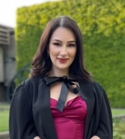

Antonia Tsvetanova
Ph.D. Candidate, Medical Statistics
Centre for Health Informatics , The University of Manchester
Email: antonia.tsvetanova@manchester.ac.uk


I am an EPSRC iCASE funded PhD student in Medical Statistics at The University of Manchester in collaboration with Microsoft Research Cambridge through its PhD scholarship in EMEA . I am supervised by Glen P. Martin , Matthew Sperrin ,David Jenkins , Niels Peek , Iain Buchan and Stephanie Hyland. I am interested in both applied and methodological research, predominantly in the field of predictive/prognostic modelling. My research focuses on the problem of missing data and their handling across the pipeline of a clinical prediction model (CPM). My PhD project aims to explore the effect of using different approaches to handle missingness on the CPMs predictive performance, developed and validated using electronic health records EHR.
I have got quite a diverse academic background – I hold a BSc (Hons) Biomedical Sciences from the University of Manchester, where I have undertook numerous courses in a broad range of subjects including molecular biology, pharmacology and bioinformatics. I successfully completed a final year lab project at Paul Shore’s lab exploring the role of Runx2/CBFbeta in Breast Cancer and Bone Metastasis for which I received a First class mark on my dissertation
I was honoured to have the opportunity to undertake my postgraduate research in MRes Oncology at the biggest cancer hospitals in Europe, The Christie NHS Foundation Trust, where I was part of the Stem Cell and Leukaemia Proteomics Lab, under the supervision of Dr Stefan Meyer. During my time there, I completed an extensive research project that aimed to develop a cellular in-vitro model on acute myeloid leukaemia in children with Fanconi anaemia defect, on which I tested the effect of various chemotherapeutic agents, analysed, and compared my results from molecular studies with real patients’ data. Not only did I acquire various transferable research skills, but I have also received the highest marks on my project literature review (86%).
Throughout the time I completed both my BSc (Hons) and MRes degrees, my interest in how scientific conclusions are drawn from original data, remained stronger than ever. Whilst I had a sound foundation in medical sciences, I identified the need to develop my interdisciplinary knowledge in statistics and Machine Learning. Since 2018, I have completed numerous courses relevant to the field, including Machine Learning and Probabilistic Graphical Models specialisation by Stanford University; Dealing with missing data by UCL, Using simulation studies to evaluate statistical methods by UCL, Statistical methods for risk prediction by Keele Univeristy. In January 2021 I have also attended the AI4Health Winter School in Paris, France, where I completed three days of plenary sessions and two days of hands-on practical workshops, applying ML methods to healthcare problems.
From May to September 2022, I was visiting the Microsoft Research Lab in Cambridge as part of my PhD studies. During my time here, I performed an extensive simulation study, exploring whether informativeness of observation(s) as a result of changes in clinicians' observation, recording and coding practices, makes ML-models susceptible to failure during their deployment in health settings. In September 2022, I have also attended the world’s first Online Summer School exclusively focused on AI and Machine Learning for Healthcare.
Publications
- Missing data was handled inconsistently in UK prediction models: a review of method used.
Antonia Tsvetanova, Matthew Sperrin, Niels Peek, Iain Buchan, Stephanie Hyland, Glen P Martin
Journal of Clinical Epidemiology, 2021.
[paper]
Invited Talks
- November 2022: American Medical Informatics Association AMIA at Washington, DC, USA.
- September 2022: Royal Statistical Society International Conference RSS at Aberdeen, UK.
- August 2022: International Society for Clinical Biostatistics ISCB at Newcastle, UK.
- January 2021: AI4Health Winter School Paris ai4health at Paris, France.
- June 2020 : Young Statisticians Meeting YSM2020 online
{kind=link}
Teaching
- Autumn 2022: Graduate Teaching Assistant for Fundamental Mathematics & Statistics for Health Data as part of the MSc Health Data Science at The University of Manchester
- Autumn 2022: Graduate Teaching Assistant for Statistical Modelling and Inference for Health as part of the MSc Health Data Sicence at The University of Manchester
- Autumn 2022: Graduate Teaching Assistant for Health Information Systems as part of the MSc Health Informatics, UCL, London
- Autumn 2022: Graduate Teaching Assistant for Scientific Skills: Human Biology and Radiochemistry as part of the MSc Medical Imaging, UoM
Awards
- January 2020: The best presentation on a literature review and research project introduction by a first year PhD student at the annual PGR student showcase, UoM
- February 2021: Prize for the best presentation as voted by those who gave a talk at the Postgraduate Research Seminar in the Division of Informatics, Imaging and Data Sciences, UoM
Template Design by Aditya Grover.